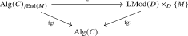

Let \(M\) be an abelian group, and let \(\End (M)\) denote the set of group homomorphisms from \(M\) to itself. We may equip \(\End (M)\) with the structure of an associative ring, where addition is given pointwise, and multiplication is given by composition of homomorphisms. Moreover, this ring admits the following universal property: for any other associative ring \(R\), the data of a ring homomorphism \(R \to \End (M)\) is equivalent to the data of an \(R\)-module structure on \(M\).
We will formulate the \(\infty \)-categorical analogue in a slightly more general setting. Let \(C\) be a monoidal \(\infty \)-category and let \(D\) be left-tensored over \(C\). For an object \(M \in D\), an object \(E \in C\) equipped with a morphism \(a\colon E \otimes M \to M\) is called an endomorphism object of \(M\) if composition with \(a\) induces an isomorphism \[ \Hom _C(X,E) \iso \Hom _D(X \otimes M,M) \] for every \(X \in C\). We will explain why such an endomorphism object admits a preferred associative algebra structure and is universal among associative algebras acting on \(M\). The necessary coherence is subtle, so we will only describe the idea of the construction and refer to Lurie (2017), Section 4.7.1 for the details.
Notation 19.4.1. In the \(\infty \)-category \(\oLMod ^{\otimes }\), we have the following two ‘canonical’ morphisms \((\{\fa \},\{\fm \}) \to \{\fm \}\):
- The ‘projection map’ \(\pr \colon (\{\fa \},\{\fm \}) \to \{\fm \}\), given by the span \[ \{\fa \} \sqcup \{\fm \} \hookleftarrow \{\fm \} \xrightarrow {=} \{\fm \}. \]
- The ‘action map’ \(\act \colon (\{\fa \},\{\fm \}) \to \{\fm \}\), given by the span \[ \{\fa \} \sqcup \{\fm \} \xleftarrow {=} \{\fa \} \sqcup \{\fm \} \to \{\fm \}. \]
Construction 19.4.2 (cf. [Lurie (2017), Definition 4.7.1.1]). Let \(p_D\colon D^{\otimes } \to \oLMod ^{\otimes }\) exhibit \(D\) as left-tensored over \(C\). An enriched morphism of \(D\) is a diagram \[ N \xleftarrow {\beta } X \xrightarrow {\alpha } M \] in \(D^{\otimes }\) satisfying the following conditions:
- (1)
-
The morphism \(\beta \) is \(p_D\)-cocartesian and the image \(p_D(\beta )\) in \(\oLMod ^{\otimes }\) is the projection map \(\pr \colon (\{\fa \},\{\fm \}) \to \{\fm \}\);
- (2)
-
The image \(p_D(\alpha )\) in \(\oLMod ^{\otimes }\) is the action map \(\act \colon (\{\fa \},\{\fm \}) \to \{\fm \}\).
We denote by \[ \Ar ^{\enr }(D) \subseteq \Fun _{/\oLMod ^{\otimes }}(\pushout , D^{\otimes }) \] the full subcategory spanned by the enriched morphisms of \(D\), where \(\pushout \) is the walking span of Definition 1.4.1. There are two forgetful functors \[ (s,t)\colon \Ar ^{\enr }(D) \to D \times D \] given by \(s(\alpha ,\beta ):= N\) and \(t(\alpha ,\beta ) := M\).
Remark 19.4.3. Let us spell out the data contained in an enriched morphism. The fiber of \(D^{\otimes }\) over \((\{\fa \},\{\fm \})\) is equivalent to \(C \times D\), hence we may write \(X = (A,N')\) for some \(A \in C\) and \(N' \in D\). Condition (1) says that \(\beta \) induces an isomorphism \(N' \iso N\) in \(D\). By condition (2), the morphism \(\alpha \colon X \to M\) then corresponds to a morphism \(A \otimes N \to M\) in \(D\).
Definition 19.4.4. Let \(D\) be left-tensored over a monoidal \(\infty \)-category \(C\), and let \(M \in D\) be an object. We define the endomorphism category of \(M\) as the fiber of \((s,t)\) over \((M,M)\): \[ C[M] := \Ar ^{\enr }(D) \times _{D \times D} \{(M,M)\}. \]
An object of \(C[M]\) is equivalently a pair \((A,\eta )\) consisting of an object \(A \in C\) and a morphism \(\eta \colon A \otimes M \to M\). For two such objects, the mapping anima is \[ \Hom _{C[M]}((X,\zeta ),(A,\eta )) \simeq \Hom _C(X,A) \times _{\Hom _D(X\otimes M,M)} \{\zeta \}, \] where the map from \(\Hom _C(X,A)\) is induced by \(\eta \). Thus \((A,\eta )\) is terminal precisely when composition with \(\eta \) induces an isomorphism \[ \Hom _C(X,A)\iso \Hom _D(X\otimes M,M) \] for every \(X\in C\), which is exactly the endomorphism-object condition from the beginning of the section.
Construction 19.4.5 (Idea of the monoidal structure). We briefly indicate how Lurie equips \(C[M]\) with a monoidal structure. For each \(n\geq 0\), the twisted arrow poset \(\Tw ^r([n])\) from Definition 13.1.6 organizes the subintervals of \([n]\). Sending an interval \((i\leq j)\) to its length, and a subinterval inclusion \((k\leq l)\subseteq (i\leq j)\) to the dual of the translated interval inclusion \([l-k]\hookrightarrow [j-i]\), gives a diagram \[ \Tw ^r([n]) \longrightarrow \simp \catop \xrightarrow {(-,0)} \simp \catop \times [1] \xrightarrow {\LCut } \oLMod ^{\otimes }. \] A suitable lift to \(D^{\otimes }\) records a string of enriched morphisms \[ M_0\longrightarrow M_1\longrightarrow \cdots \longrightarrow M_n \] together with all their coherent composites. Relative Kan extension makes these lifts functorial in \([n]\), and restriction to the consecutive subintervals satisfies the Segal condition. Taking the fiber over the constant string \((M,\ldots ,M)\) therefore produces an \(\bbA _{\infty }\)-monoidal structure on \(C[M]\). We refer to [Lurie (2017), Definitions 4.7.1.5--4.7.1.6, Proposition 4.7.1.13] for the relative Kan extension and the verification of the Segal condition.
Under the comparison between \(\bbA _{\infty }\)-monoidal categories and monoidal \(\infty \)-categories obtained by applying Theorem 19.3.2 to \(\Cat _{\infty }\), the resulting tensor product is given on objects by \[ (A,\eta ) \otimes (A',\eta ') = \left (A \otimes A', A \otimes A' \otimes M \xrightarrow {\id _A \otimes \eta '} A \otimes M \xrightarrow {\eta } M\right ). \]
Theorem 19.4.6 ([Lurie (2017), Proposition 4.7.1.30, Theorem 4.7.1.34]). Let \(D\) be left-tensored over a monoidal \(\infty \)-category \(C\), and let \(M \in D\). The endomorphism category \(C[M]\) admits a monoidal structure for which the forgetful functor \(C[M] \to C\) is monoidal. Moreover, there is an equivalence \[ \Alg (C[M]) \iso \LMod (D) \times _D \{M\} \] compatible with the forgetful functors to \(\Alg (C)\).
The equivalence in this theorem is obtained by combining the simplicial models for algebras and modules from Section 19.3 with evaluation of an enriched string on its longest interval. Lurie’s construction first replaces \(C[M]\) by an equivalent auxiliary monoidal category defined using left Kan extensions; this is what ensures that evaluation on the longest interval retains all the coherent module data.
Corollary 19.4.7 ([Lurie (2017), Corollary 4.7.1.40]). Let \(D\) be left-tensored over a monoidal \(\infty \)-category \(C\), and let \(M \in D\) admit an endomorphism object \(\End (M) \in C\). Then \(\End (M)\) admits a preferred structure of an associative algebra, and \(M\) admits a preferred structure of a left module over \(\End (M)\). Moreover, there is an equivalence of \(\infty \)-categories making the following diagram commute:

Proof. By definition, \(\End (M)\) is terminal in \(C[M]\). The monoidal structure from Theorem 19.4.6 and Corollary 14.4.11 therefore give \(\End (M)\) a unique associative algebra structure in \(C[M]\). Its image in \(C\) is an associative algebra, while its image under the equivalence of Theorem 19.4.6 is a left module structure on \(M\).
The forgetful functor \(\Alg (C[M]) \to \Alg (C)\) is a right fibration by [Lurie (2017), Proposition 4.7.1.39]. Since its total category has the terminal object just constructed, this right fibration is represented by \(\End (M)\). This gives the displayed equivalence. □
Generated from the authoritative LaTeX source.